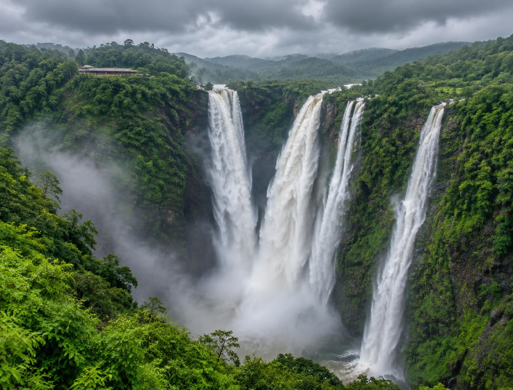
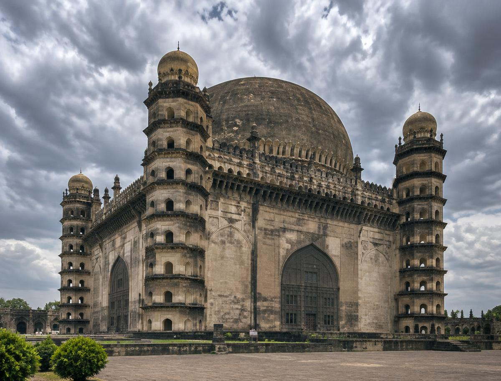
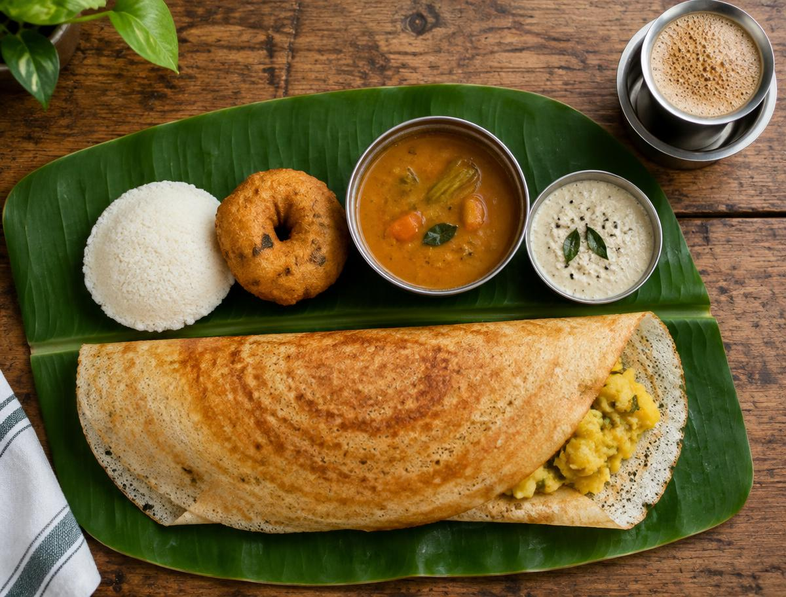

Hampi boulder landscape
Hampi boulder landscape
 Mysore Palace at dusk
Mysore Palace at dusk

Jog Falls in monsoon Coffee hills of Coorg
Coffee hills of Coorg
 Gokarna coastline
Gokarna coastline
 Virupaksha Temple gopuram
Virupaksha Temple gopuram

Gol Gumbaz dome
Meal on a banana leaf
Close
Jog Falls in monsoon - The Sharavathi River falling 253 m in Shivamogga district
Close
Gol Gumbaz dome - Adil Shahi mausoleum in Vijayapura
Close
Meal on a banana leaf - Dosa, idli, sambar, chutney and filter coffee